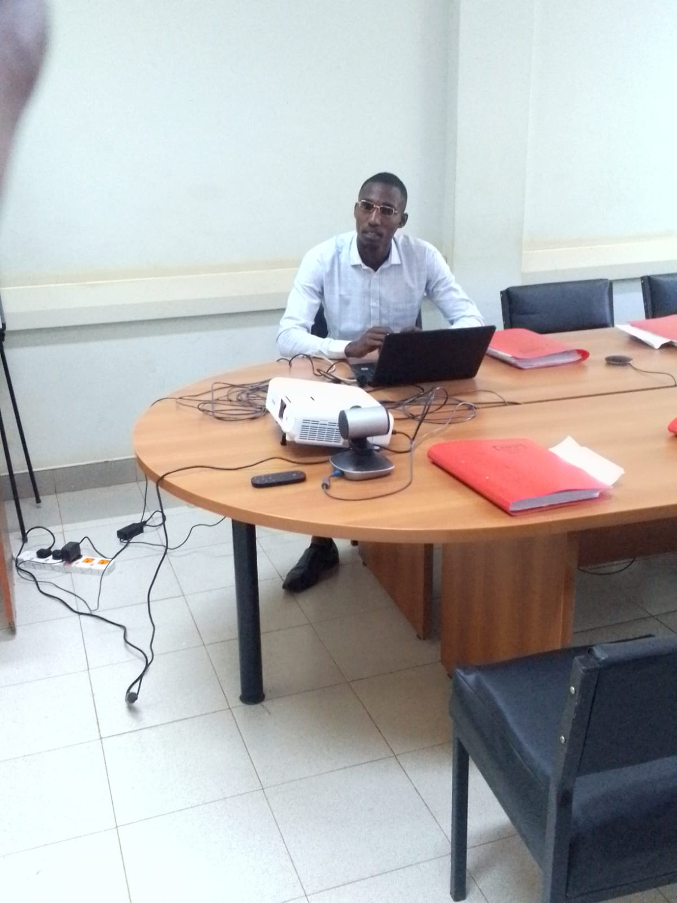
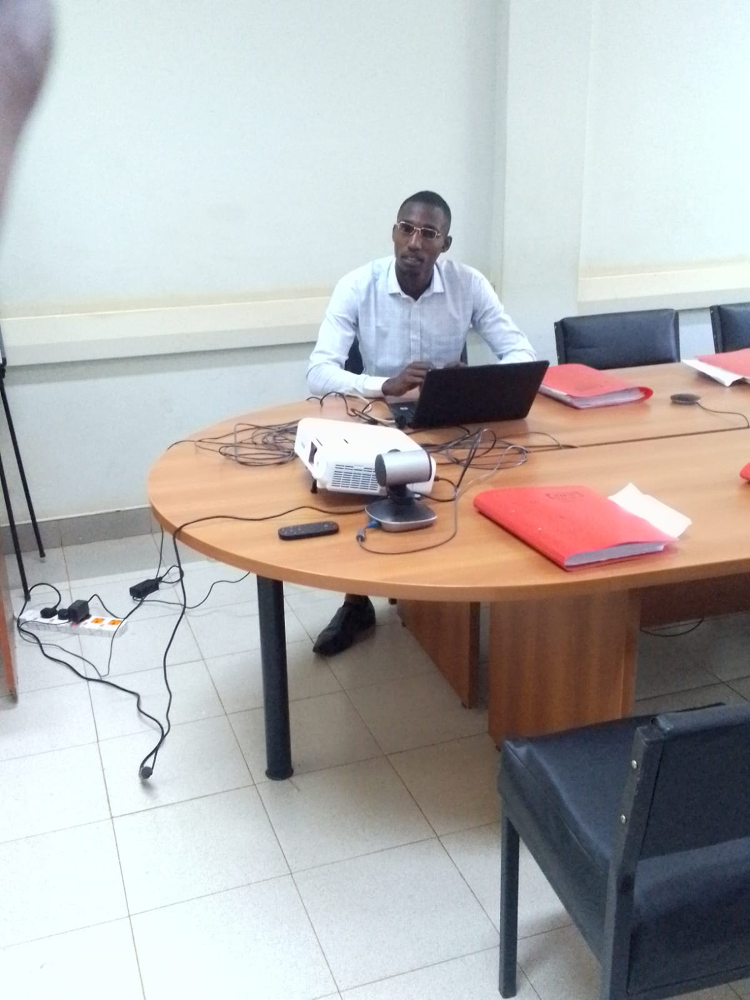

About Me
I am a Junior Data Scientist, specializing in Data Science and Machine Learning. I am passionate about applying data-driven methodologies to solve real-world problems, particularly in fields like agriculture, banking fraud detection, and business analytics.
My work focuses on leveraging programming languages like Python and R, along with machine learning algorithms, to build predictive models and data-driven solutions. Whether it's analyzing agricultural data or detecting anomalies in financial transactions, my goal is to create impactful, data-backed decisions that drive success.
 
